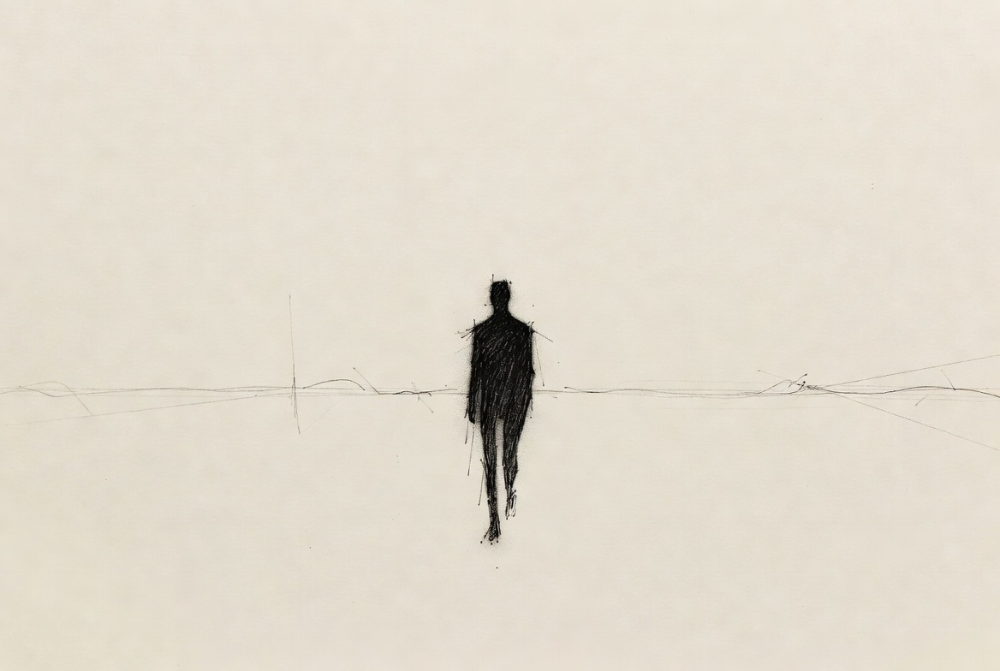

The origin.

Who Musonius was.
Gaius Musonius Rufus lived in Rome around 30 to 100 AD. He taught Stoic philosophy. His student Epictetus became one of the most quoted figures in the Stoic tradition. Epictetus’s lectures, in turn, shaped much of what Marcus Aurelius later wrote in his Meditations.
Musonius is less famous than his student, and less famous than Aurelius. The Stoic school considers him foundational. He wrote on the everyday practice of virtue: prudence, discipline, austerity, resilience, and the discharge of duty across generations.
Why the name fits.
The Stoic values map onto what this product is built for. Four of them in particular:
- Self-custody as discipline. Holding your own keys is a practice, not a one-time act. Stoic ethics treat virtue the same way: a daily exercise, not a possession.
- Multi-generational thinking. Inheritance is the central problem this vault is built for. Stoics wrote about duty across time. To one’s family. To one’s heirs. To a future one will not see.
- Austerity and minimal trust. Musonius holds no keys. It sees no seeds. It signs nothing on your behalf. Its design is austere by construction. The Stoic instruction to "live according to nature" maps cleanly onto "let the cryptography do the work; do not add what is not needed."
- Resilience. The long failsafe, the two-key recovery path, the printable Sovereignty Backup Kit. These are answers to "what if everything goes wrong." Stoicism is, at its core, a discipline for the unexpected.
Musonius taught Epictetus. Epictetus shaped Marcus Aurelius. The lineage theme, passing knowledge and virtue forward through people we will never meet, is itself an inheritance metaphor.
Picking the teacher of the more famous student, rather than the famous student himself, is also deliberate. So is choosing a name that lasted two thousand years on its merits rather than on its marketing.
Why “vault” and not “wallet.”
Most Bitcoin software with this shape calls itself a “wallet.” Sparrow. Liana. Specter. None of them actually hold your keys; they help you use the keys held on your own hardware. Musonius works the same way. We could have called it a wallet without confusing anyone in the Bitcoin space.
We chose vault instead. Two reasons.
First, the mental model. A vault is a container. The container holds many wallets. The vault is the structure: the rules, the keys involved, the waiting periods, the recovery paths. The wallets are the keys themselves, held by you, your cosigner, and your inheritance keyholder. Calling the whole product a “wallet” would collapse the structure into one of its parts.
Second, honest framing. A wallet holds keys. Musonius does not hold keys. Calling it a wallet would create a small, persistent gap between what you expect and what the product does. Calling it a vault tells the truth.
“Coordinator” or “coordination layer” would be technically precise. Neither is industry vocabulary, and both would alienate the reader before the product has had a chance to introduce itself. Vault is recognizable, accurate, and matches the way we already think about what we built.
Trust in math. Not in people.